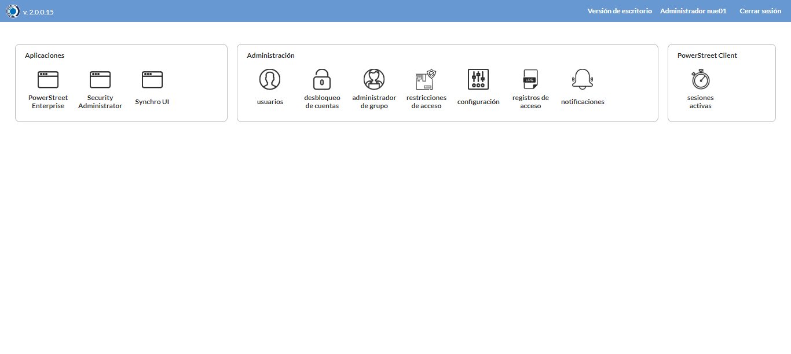
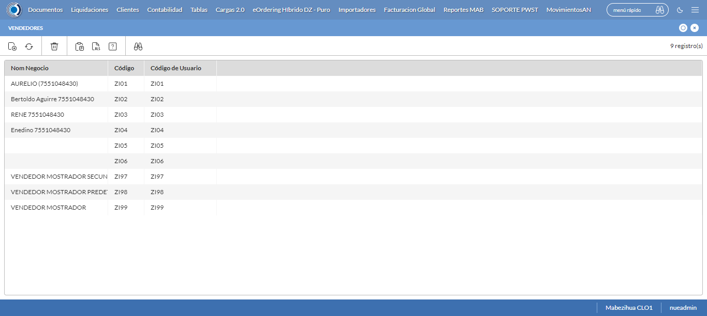
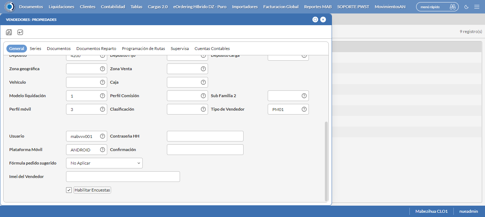
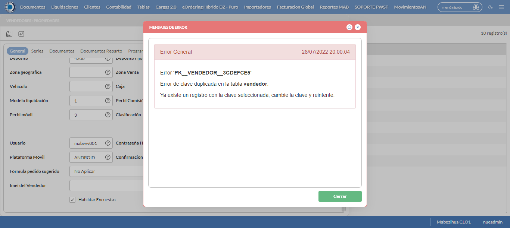
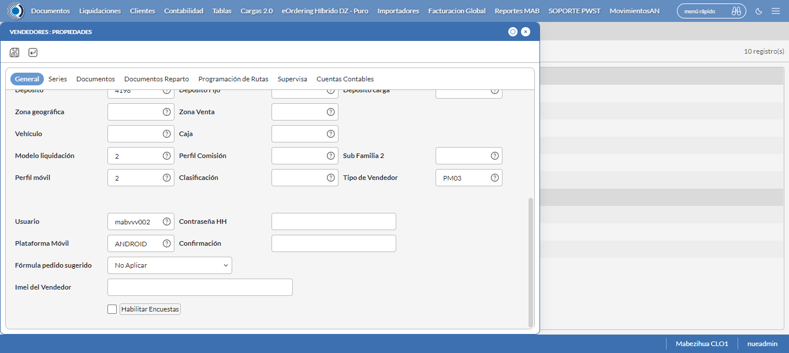
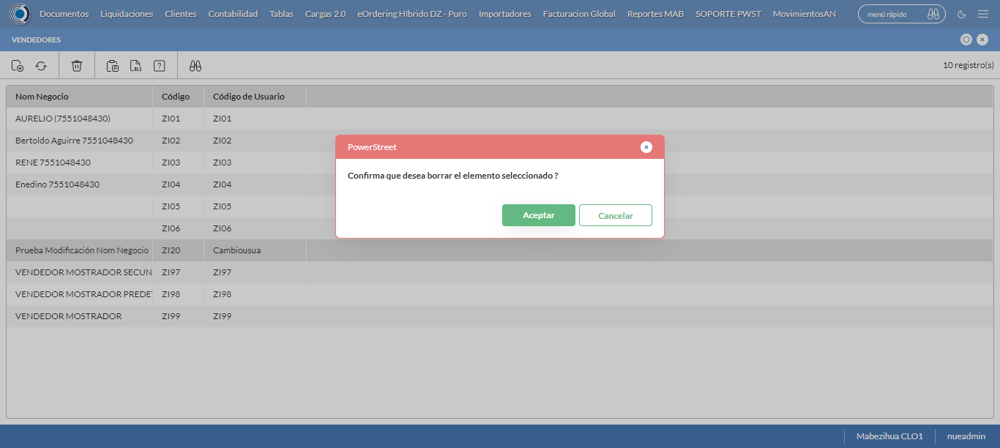

Desarrollado por : Area de Testing PWST
Fecha y hora de inicio : 2022-07-28 17:52:03
Duracion : 0:14:19.736041
Resultado : Total 8，Correctos 8 ，Taza de resultado 100.00%
Resumen 100.00% Errores 0 Fallidos 0 Correctos 8 Test realizados 8
| Caso de Prueba | Total | Correctos | Fallido | Error | Detalles | Captura del error |
| Vendedores.Test: Escenario 1 de Vendedores | 8 | 8 | 0 | 0 | Detalles | |
test |
pt1_1: 2022-07-28 17:52:05,084 - root - INFO - Se abre el chrome
2022-07-28 17:52:08,713 - root - INFO - Entra a la URL
2022-07-28 17:52:08,849 - root - INFO - Maximiza la pantalla
2022-07-28 17:52:11,911 - root - INFO - Cambia al frame
|
|
||||
test_000: Ingresa a la base de datos |
pt1_2: 2022-07-28 17:52:15,015 - root - INFO - Escribe el usuario
2022-07-28 17:52:15,130 - root - INFO - Escribe la contraseña
2022-07-28 17:52:15,286 - root - INFO - Se dio clic en el boton ingresar
2022-07-28 17:52:18,302 - root - INFO - Ejecutar Enterprise
2022-07-28 17:52:18,303 - root - INFO - Captura: C:\xampp\htdocs\versiones\automatizaciones\AutoPWST\01VE\report\img screen：20220728_17_52_18.png
2022-07-28 17:52:22,525 - root - INFO - Cambia entre pestañas
|
 | ||||
test_001: Abre menu y ejecuta pantalla |
pt1_3: 2022-07-28 17:52:47,158 - root - INFO - Abre el menu completo
2022-07-28 17:53:00,083 - root - INFO - Abre la pantalla de Familias de Impuestos
2022-07-28 17:53:00,124 - root - INFO - La pantalla ejecutada es Familias de Impuestos
2022-07-28 17:53:00,124 - root - INFO - Captura: C:\xampp\htdocs\versiones\automatizaciones\AutoPWST\01VE\report\img screen：20220728_17_53_00.png
2022-07-28 17:53:00,321 - root - INFO - Se presiona el boton 'Nuevo', para crear un nuevo registro.
|
 | ||||
test_002: Abre la ventana de nuevo y crear un registro |
pt1_4: 2022-07-28 17:53:03,510 - root - INFO - Se abrio la pantalla para el ingreso de un registro nuevo.
2022-07-28 17:53:03,568 - root - INFO - El campo 'Codigo' si se encuentra visible.
2022-07-28 17:53:03,608 - root - INFO - El campo 'Código Alternativo' si se encuentra visible.
2022-07-28 17:53:03,651 - root - INFO - El campo 'Código Usuario' si se encuentra visible.
2022-07-28 17:53:03,690 - root - INFO - El campo 'Nom Negocio' si se encuentra visible.
2022-07-28 17:53:03,731 - root - INFO - El campo 'Documento de Identidad' si se encuentra visible.
2022-07-28 17:53:03,775 - root - INFO - El campo 'Calle' si se encuentra visible.
2022-07-28 17:53:03,829 - root - INFO - El campo 'Nro. Puerta' si se encuentra visible.
2022-07-28 17:53:03,868 - root - INFO - El campo 'Esquinas' si se encuentra visible.
2022-07-28 17:53:03,908 - root - INFO - El campo 'Teléfonos' si se encuentra visible.
2022-07-28 17:53:03,953 - root - INFO - El campo 'Empresa base' si se encuentra visible.
2022-07-28 17:53:03,997 - root - INFO - El campo 'Cuenta base' si se encuentra visible.
2022-07-28 17:53:04,037 - root - INFO - El campo 'Distribuidor base' si se encuentra visible.
2022-07-28 17:53:04,076 - root - INFO - El campo 'Agencia' si se encuentra visible.
2022-07-28 17:53:04,116 - root - INFO - El campo 'Oficina' si se encuentra visible.
2022-07-28 17:53:04,155 - root - INFO - El campo 'Depósito' si se encuentra visible.
2022-07-28 17:53:04,196 - root - INFO - El campo 'Modelo liquidación' si se encuentra visible.
2022-07-28 17:53:04,235 - root - INFO - El campo 'Perfil móvil' si se encuentra visible.
2022-07-28 17:53:04,290 - root - INFO - El campo 'Tipo de Vendedor' si se encuentra visible.
2022-07-28 17:53:04,331 - root - INFO - El campo 'Plataforma Móvil' si se encuentra visible.
2022-07-28 17:53:04,371 - root - INFO - El campo 'Fórmula pedido sugerido' si se encuentra visible.
2022-07-28 17:53:04,412 - root - INFO - El campo 'Habilitar Encuestas' si se encuentra visible.
2022-07-28 17:53:04,529 - root - INFO - Ingresa el codigo del nuevo registro
2022-07-28 17:53:07,660 - root - INFO - Ingresa el codigo alternativo del nuevo registro
2022-07-28 17:53:10,795 - root - INFO - Ingresa el codigo usuario del nuevo registro
2022-07-28 17:53:13,960 - root - INFO - Ingresa el Nom Negocio del nuevo registro
2022-07-28 17:53:17,101 - root - INFO - Ingresa el Documento de Identidad del nuevo registro
2022-07-28 17:53:20,252 - root - INFO - Ingresa la calle del nuevo registro
2022-07-28 17:53:23,358 - root - INFO - Ingresa el nro puerta del nuevo registro
2022-07-28 17:53:26,502 - root - INFO - Ingresa la Esquina 1 del nuevo registro
2022-07-28 17:53:29,633 - root - INFO - Ingresa la Esquina 2 del nuevo registro
2022-07-28 17:53:32,778 - root - INFO - Ingresa el Telefono 1 del nuevo registro
2022-07-28 17:53:35,898 - root - INFO - Ingresa el Telefono 2 del nuevo registro
2022-07-28 17:55:41,251 - root - INFO - Captura: C:\xampp\htdocs\versiones\automatizaciones\AutoPWST\01VE\report\img screen：20220728_17_55_41.png
2022-07-28 17:55:41,452 - root - INFO - Se hace el cambio de pestaña para continuar con el registro nuevo
2022-07-28 17:55:44,537 - root - INFO - Se presiona el boton 'Nuevo', para crear un nuevo registro.
2022-07-28 17:55:45,642 - root - INFO - El campo 'Serie base' si se encuentra visible.
2022-07-28 17:55:45,702 - root - INFO - El campo 'Tipo Impresora' si se encuentra visible.
2022-07-28 17:55:45,746 - root - INFO - El campo 'Puerto Impresora' si se encuentra visible.
2022-07-28 17:55:45,786 - root - INFO - El campo 'Impresora + Lenguaje' si se encuentra visible.
2022-07-28 17:55:45,828 - root - INFO - El campo 'Clave correlativo' si se encuentra visible.
2022-07-28 17:55:45,868 - root - INFO - El campo 'Desde número' si se encuentra visible.
2022-07-28 17:55:45,908 - root - INFO - El campo 'Hasta número' si se encuentra visible.
2022-07-28 17:56:15,705 - root - INFO - Ingresa la Clave Correlativo del nuevo registro
2022-07-28 17:56:18,848 - root - INFO - Ingresa Desde Numero del nuevo registro
2022-07-28 17:56:21,989 - root - INFO - Ingresa Hasta Numero del nuevo registro
2022-07-28 17:56:25,113 - root - INFO - Se presiona el boton 'Guardar', para guardar el registro.
2022-07-28 17:56:29,226 - root - INFO - Se hace el cambio de pestaña para continuar con el registro nuevo
2022-07-28 17:56:32,339 - root - INFO - Se presiona el boton 'Nuevo', para crear un nuevo registro.
2022-07-28 17:56:32,915 - root - INFO - El campo 'Tipo documento' si se encuentra visible.
2022-07-28 17:56:32,955 - root - INFO - El campo 'Modelo de Impresión' si se encuentra visible.
2022-07-28 17:56:49,721 - root - INFO - Se presiona el boton 'Guardar', para guardar el registro.
2022-07-28 17:56:53,805 - root - INFO - Se hace el cambio de pestaña para continuar con el registro nuevo
2022-07-28 17:56:56,921 - root - INFO - Se presiona el boton 'Nuevo', para crear un nuevo registro.
2022-07-28 17:56:57,483 - root - INFO - El campo 'Tipo Documento 2' si se encuentra visible.
2022-07-28 17:56:57,525 - root - INFO - El campo 'Modelo de Impresión' si se encuentra visible.
2022-07-28 17:57:13,366 - root - INFO - Se presiona el boton 'Guardar', para guardar el registro.
2022-07-28 17:57:17,456 - root - INFO - Se da clic en el boton Guardar; se debe crear un nuevo registro.
|
 | ||||
test_003: Repetir el registro creado anteriormente |
pt1_5: 2022-07-28 17:57:20,555 - root - INFO - Se presiona el boton 'Refrescar', para crear un nuevo registro igual al anterior.
2022-07-28 17:57:23,698 - root - INFO - Se presiona el boton 'Nuevo', para crear un nuevo registro igual al anterior.
2022-07-28 17:57:26,838 - root - INFO - Se abrio la pantalla para el ingreso de un registro nuevo.
2022-07-28 17:57:26,879 - root - INFO - El campo 'Codigo' si se encuentra visible.
2022-07-28 17:57:26,919 - root - INFO - El campo 'Código Alternativo' si se encuentra visible.
2022-07-28 17:57:26,959 - root - INFO - El campo 'Código Usuario' si se encuentra visible.
2022-07-28 17:57:26,998 - root - INFO - El campo 'Nom Negocio' si se encuentra visible.
2022-07-28 17:57:27,037 - root - INFO - El campo 'Documento de Identidad' si se encuentra visible.
2022-07-28 17:57:27,096 - root - INFO - El campo 'Calle' si se encuentra visible.
2022-07-28 17:57:27,135 - root - INFO - El campo 'Nro. Puerta' si se encuentra visible.
2022-07-28 17:57:27,173 - root - INFO - El campo 'Esquinas' si se encuentra visible.
2022-07-28 17:57:27,216 - root - INFO - El campo 'Teléfonos' si se encuentra visible.
2022-07-28 17:57:27,255 - root - INFO - El campo 'Empresa base' si se encuentra visible.
2022-07-28 17:57:27,294 - root - INFO - El campo 'Cuenta base' si se encuentra visible.
2022-07-28 17:57:27,332 - root - INFO - El campo 'Distribuidor base' si se encuentra visible.
2022-07-28 17:57:27,376 - root - INFO - El campo 'Agencia' si se encuentra visible.
2022-07-28 17:57:27,415 - root - INFO - El campo 'Oficina' si se encuentra visible.
2022-07-28 17:57:27,477 - root - INFO - El campo 'Depósito' si se encuentra visible.
2022-07-28 17:57:27,515 - root - INFO - El campo 'Modelo liquidación' si se encuentra visible.
2022-07-28 17:57:27,555 - root - INFO - El campo 'Perfil móvil' si se encuentra visible.
2022-07-28 17:57:27,594 - root - INFO - El campo 'Tipo de Vendedor' si se encuentra visible.
2022-07-28 17:57:27,633 - root - INFO - El campo 'Plataforma Móvil' si se encuentra visible.
2022-07-28 17:57:27,673 - root - INFO - El campo 'Fórmula pedido sugerido' si se encuentra visible.
2022-07-28 17:57:27,711 - root - INFO - El campo 'Habilitar Encuestas' si se encuentra visible.
2022-07-28 17:57:27,823 - root - INFO - Ingresa el codigo del nuevo registro
2022-07-28 17:57:30,964 - root - INFO - Ingresa el codigo alternativo del nuevo registro
2022-07-28 17:57:34,115 - root - INFO - Ingresa el codigo usuario del nuevo registro
2022-07-28 17:57:37,275 - root - INFO - Ingresa el Nom Negocio del nuevo registro
2022-07-28 17:57:40,420 - root - INFO - Ingresa el Documento de Identidad del nuevo registro
2022-07-28 17:57:43,579 - root - INFO - Ingresa la calle del nuevo registro
2022-07-28 17:57:46,681 - root - INFO - Ingresa el nro puerta del nuevo registro
2022-07-28 17:57:49,805 - root - INFO - Ingresa la Esquina 1 del nuevo registro
2022-07-28 17:57:52,937 - root - INFO - Ingresa la Esquina 2 del nuevo registro
2022-07-28 17:57:56,072 - root - INFO - Ingresa el Telefono 1 del nuevo registro
2022-07-28 17:57:59,247 - root - INFO - Ingresa el Telefono 2 del nuevo registro
2022-07-28 18:00:03,780 - root - INFO - Se da clic en el boton Guardar; se debe crear un nuevo registro.
2022-07-28 18:00:06,792 - root - INFO - Captura: C:\xampp\htdocs\versiones\automatizaciones\AutoPWST\01VE\report\img screen：20220728_18_00_06.png
2022-07-28 18:00:06,944 - root - INFO - Captura: C:\xampp\htdocs\versiones\automatizaciones\AutoPWST\01VE\report\img screen：20220728_18_00_06.png
2022-07-28 18:00:07,179 - root - INFO - Se presiona el boton 'Cerrar', para cerrar el mensaje de duplicidad de llave primaria
2022-07-28 18:00:09,264 - root - INFO - Se presiona el boton 'Cerrar', para cerrar la ventana
|
 | ||||
test_004: Modificar el registro |
pt1_6: 2022-07-28 18:00:13,343 - root - INFO - Se presiona el boton 'Refrescar', para crear un nuevo registro igual al anterior.
2022-07-28 18:00:23,954 - root - INFO - Se da clic en el registro creado, para proceder a modificarlo.
2022-07-28 18:00:24,203 - root - INFO - Ingresa el codigo alternativo del nuevo registro
2022-07-28 18:00:27,375 - root - INFO - Ingresa el codigo usuario del nuevo registro
2022-07-28 18:00:30,560 - root - INFO - Ingresa el Nom Negocio del nuevo registro
2022-07-28 18:00:33,732 - root - INFO - Ingresa el Documento de Identidad del nuevo registro
2022-07-28 18:00:36,940 - root - INFO - Ingresa la calle del nuevo registro
2022-07-28 18:00:40,112 - root - INFO - Ingresa el nro puerta del nuevo registro
2022-07-28 18:00:43,270 - root - INFO - Ingresa la Esquina 1 del nuevo registro
2022-07-28 18:00:46,454 - root - INFO - Ingresa la Esquina 2 del nuevo registro
2022-07-28 18:00:49,623 - root - INFO - Ingresa el Telefono 1 del nuevo registro
2022-07-28 18:00:52,804 - root - INFO - Ingresa el Telefono 2 del nuevo registro
2022-07-28 18:03:09,281 - root - INFO - Captura: C:\xampp\htdocs\versiones\automatizaciones\AutoPWST\01VE\report\img screen：20220728_18_03_09.png
2022-07-28 18:03:09,555 - root - INFO - Se hace el cambio de pestaña para continuar con el registro nuevo
2022-07-28 18:03:20,146 - root - INFO - Se da clic en el registro creado, para proceder a modificarlo.
2022-07-28 18:03:23,249 - root - INFO - Se presiona el boton 'Eliminar', para eliminar el registro.
2022-07-28 18:03:23,329 - root - INFO - Se presiona el boton 'Nuevo', para crear un nuevo registro.
2022-07-28 18:03:55,294 - root - INFO - Ingresa la Clave Correlativo del nuevo registro
2022-07-28 18:03:58,469 - root - INFO - Ingresa Desde Numero del nuevo registro
2022-07-28 18:04:01,634 - root - INFO - Ingresa Hasta Numero del nuevo registro
2022-07-28 18:04:04,746 - root - INFO - Se presiona el boton 'Guardar', para guardar el registro.
2022-07-28 18:04:08,834 - root - INFO - Se hace el cambio de pestaña para continuar con el registro nuevo
2022-07-28 18:04:21,414 - root - INFO - Se da clic en el registro creado, para proceder a modificarlo.
2022-07-28 18:04:29,192 - root - INFO - Se presiona el boton 'Guardar', para guardar el registro.
2022-07-28 18:04:33,282 - root - INFO - Se hace el cambio de pestaña para continuar con el registro nuevo
2022-07-28 18:04:45,872 - root - INFO - Se da clic en el registro creado, para proceder a modificarlo.
2022-07-28 18:04:53,638 - root - INFO - Se presiona el boton 'Guardar', para guardar el registro.
2022-07-28 18:04:57,769 - root - INFO - Se da clic en el boton Guardar; se debe modificar la informacion del registro.
|
 | ||||
test_005: Eliminar el registro creado |
pt1_7: 2022-07-28 18:05:00,902 - root - INFO - Se presiona el boton 'Refrescar', para proceder a eliminar el registro.
2022-07-28 18:05:08,522 - root - INFO - Se da clic en el registro creado, para proceder a eliminarlo.
2022-07-28 18:05:08,615 - root - INFO - Se hace el cambio de pestaña para continuar con el registro nuevo
2022-07-28 18:05:21,179 - root - INFO - Se da clic en el registro creado, para proceder a modificarlo.
2022-07-28 18:05:24,332 - root - INFO - Se presiona el boton 'Eliminar', para eliminar el registro.
2022-07-28 18:05:24,416 - root - INFO - Se hace el cambio de pestaña para continuar con el registro nuevo
2022-07-28 18:05:37,010 - root - INFO - Se da clic en el registro creado, para proceder a modificarlo.
2022-07-28 18:05:40,107 - root - INFO - Se presiona el boton 'Eliminar', para eliminar el registro.
2022-07-28 18:05:40,220 - root - INFO - Se hace el cambio de pestaña para continuar con el registro nuevo
2022-07-28 18:05:50,805 - root - INFO - Se da clic en el registro creado, para proceder a modificarlo.
2022-07-28 18:05:53,891 - root - INFO - Se presiona el boton 'Eliminar', para eliminar el registro.
2022-07-28 18:05:53,967 - root - INFO - Se da clic en el boton Guardar; se debe modificar la informacion del registro.
2022-07-28 18:06:01,594 - root - INFO - Se da clic en el registro creado, para proceder a eliminarlo.
2022-07-28 18:06:06,685 - root - INFO - Se presiona el boton 'Eliminar', para eliminar el registro.
2022-07-28 18:06:06,686 - root - INFO - Captura: C:\xampp\htdocs\versiones\automatizaciones\AutoPWST\01VE\report\img screen：20220728_18_06_06.png
2022-07-28 18:06:06,889 - root - INFO - Se confirma el eliminado del registro
2022-07-28 18:06:16,980 - root - INFO - Se presiona el boton 'Refrescar', para crear un nuevo registro igual al anterior.
2022-07-28 18:06:19,073 - root - INFO - Se presiona el boton 'Cerrar', para cerrar la pantalla de Categorias Fiscales.
|
 | ||||
test_006: Cerrar_Navegador |
pt1_8: 2022-07-28 18:06:23,330 - root - INFO - Se cierra chrome
|
|
||||
| Caso de prueba | 8 | 8 | 0 | 0 | Taza de resultado：100.00% | |